Contactless worked. Nothing around it did.
Diners dropped at account verification. Merchants without POS sync re-entered every order. Competitors already shipped what 1.0 didn't.
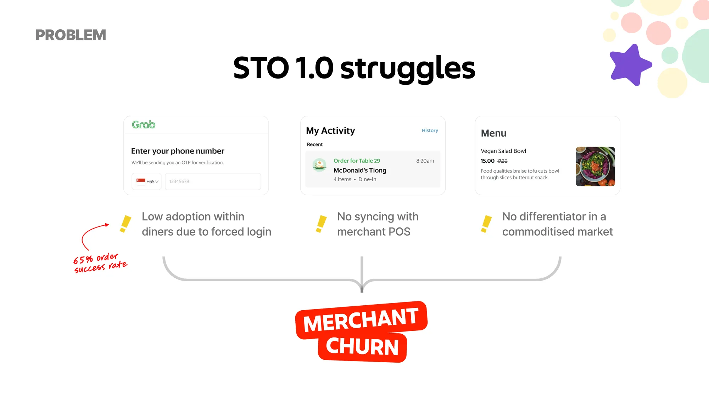


Nobody orders alone — even when they're alone.
Groups pass phones, negotiate dishes, and want one bill. Merchants rejected generic menus that didn't look like their restaurant.
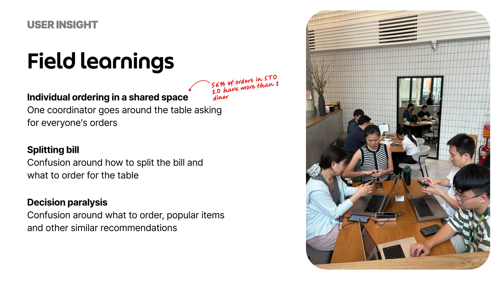
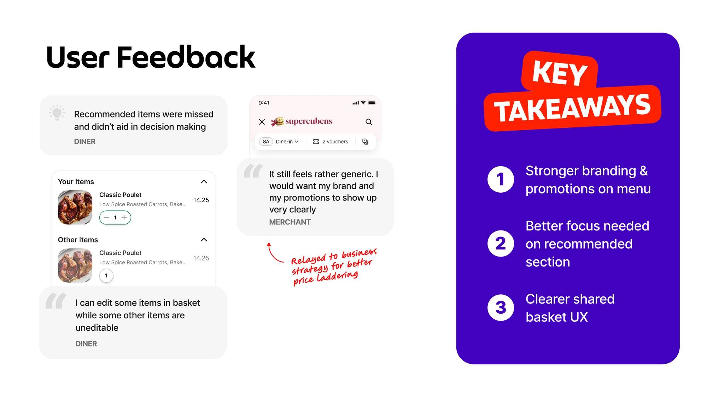
Brand the menu. Recommend lightly. Share the basket.
Whose menu is this?
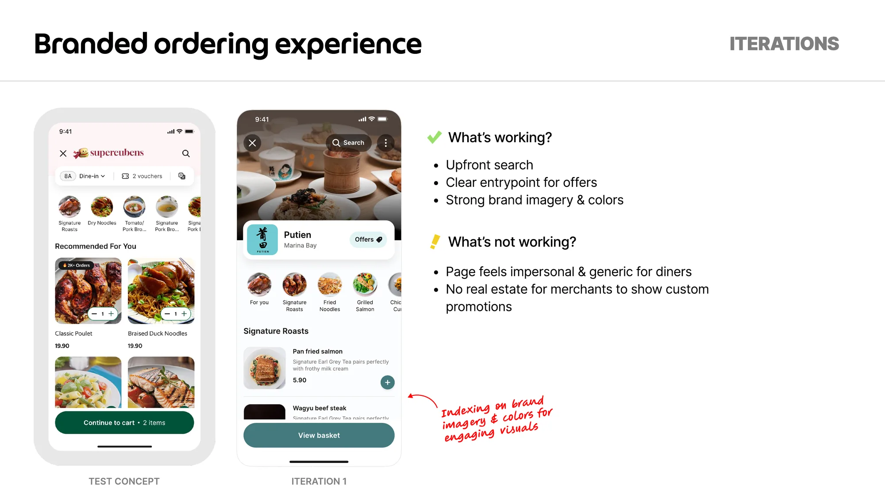
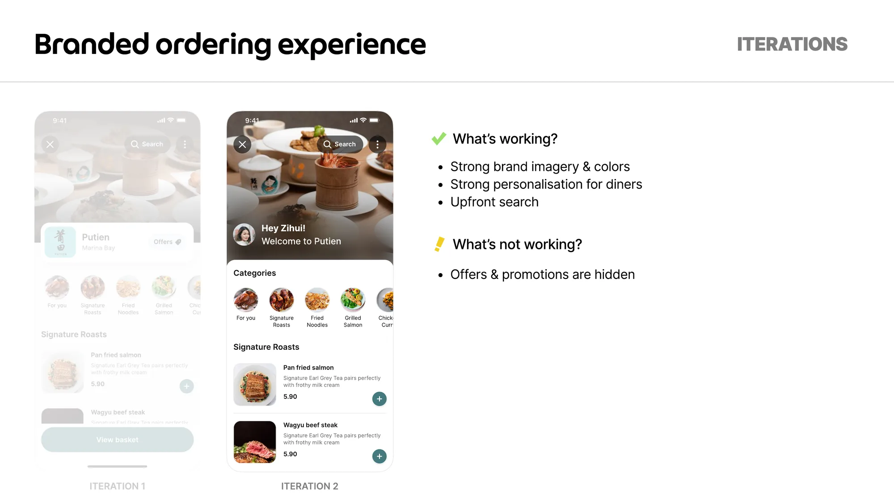
Generic Grab chrome
Merchants said it wasn't theirs.

Full-bleed photo welcome
Pretty; slow to the food.

Branded welcome → menu
Looks like the restaurant, gets to dishes fast.
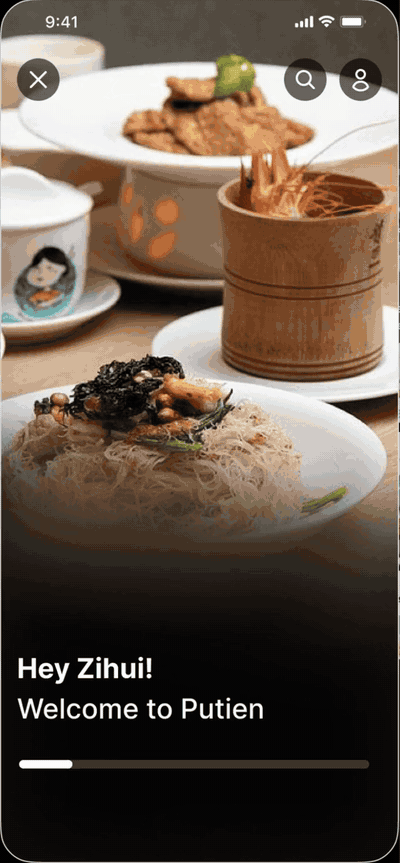
How loud should “for you” be?
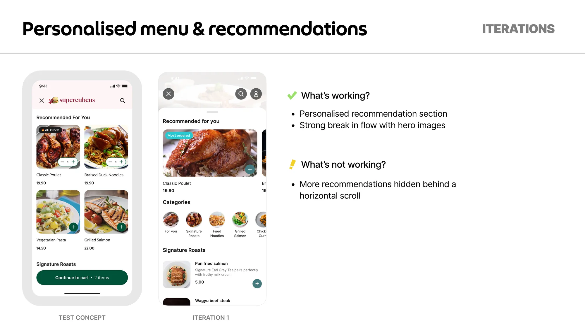
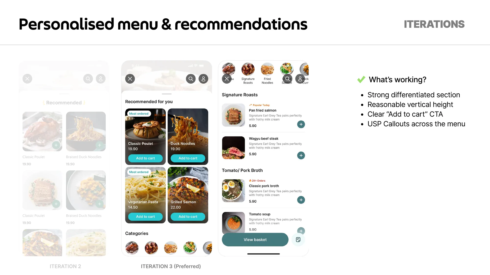
Big reco grid
Buried the menu.

Tall six-card block
Still too much chrome.

Compact strip above menu
Nudges without owning the page.

One list, or yours vs theirs?
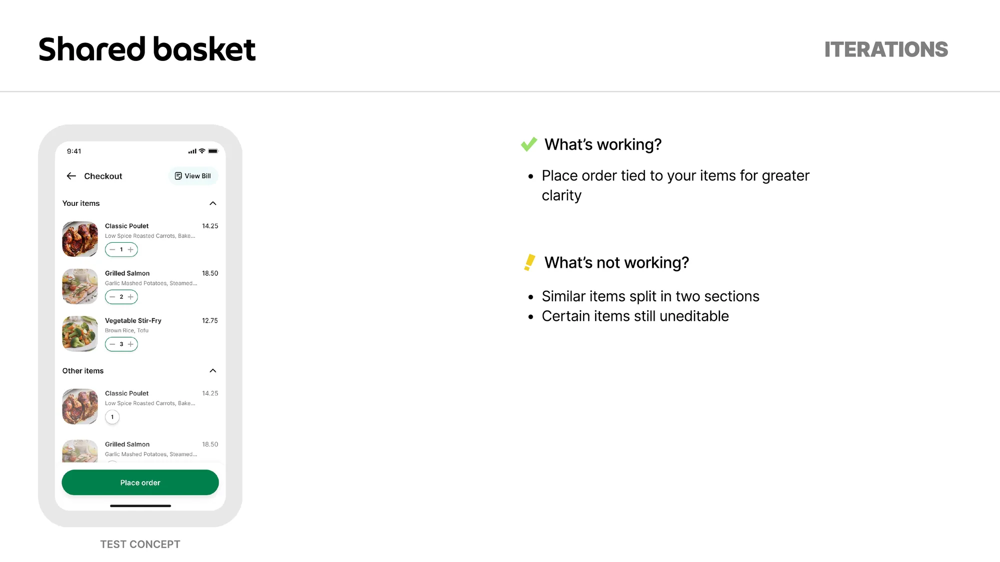
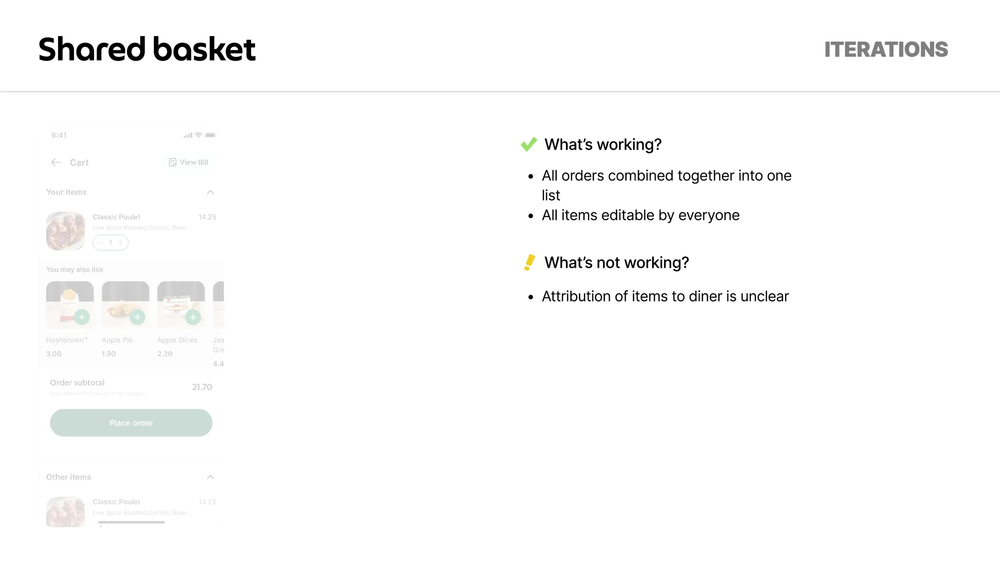
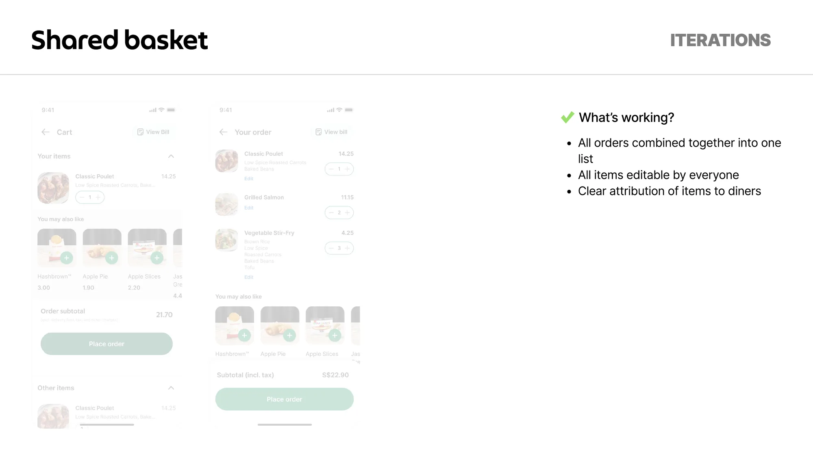
Split checkout
Felt like two bills at one table.
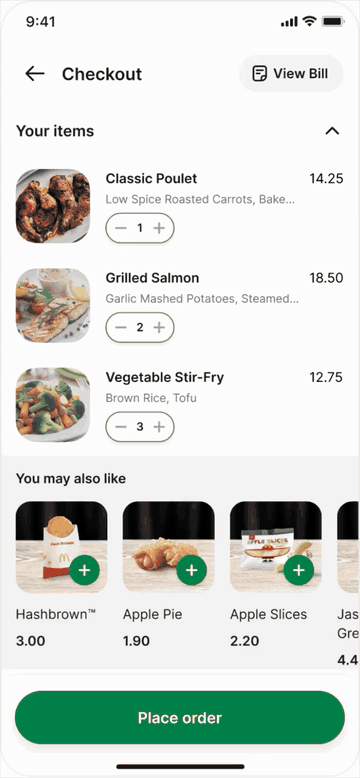
Combined, no authors
Who ordered the salmon?
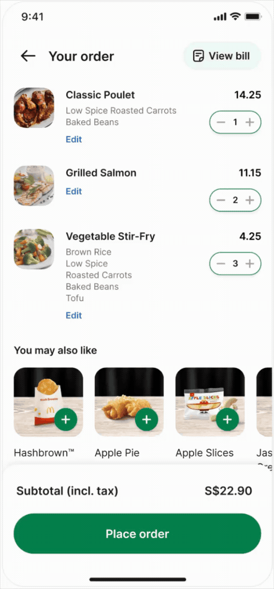
Shared basket + avatars
One order; clear authorship.
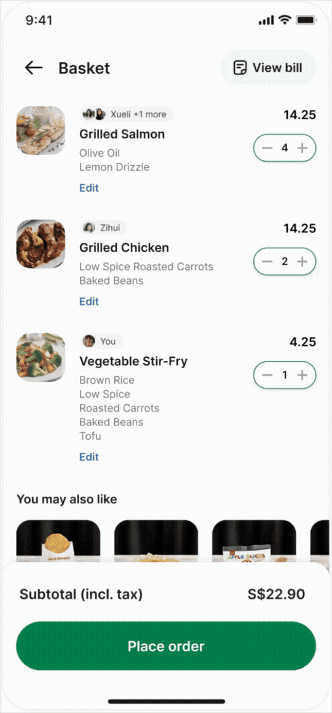
Fewer steps between the QR and the food.


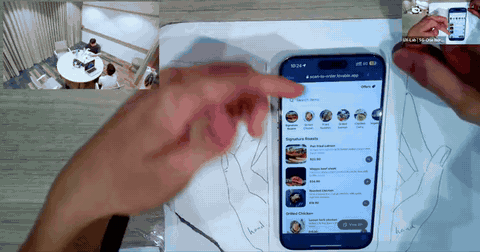
Faster for the table. Worth switching on for the restaurant.
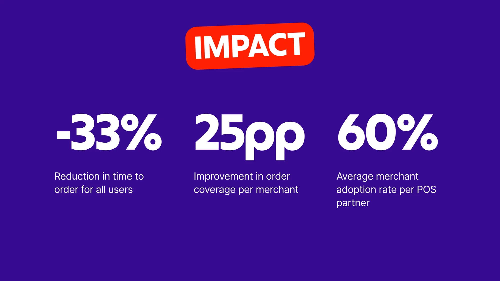
- Time to order
- −33% Scan to placed.
- Completion
- 89% Orders finished.
- Coverage
- +25pp Per merchant.
- POS adoption
- 60% Avg per partner.
Put merchant brand in the first concept, not the course-correction. A marketplace only works when both sides recognise themselves.